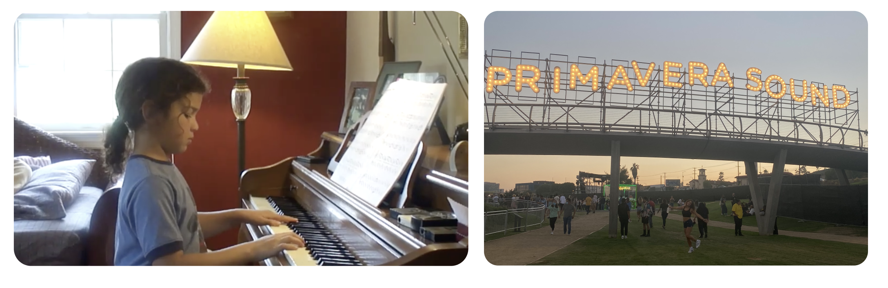
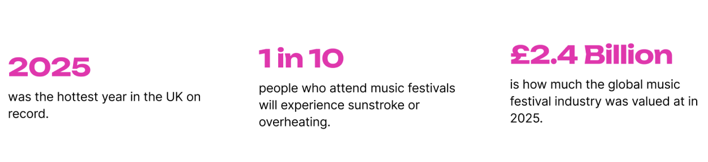
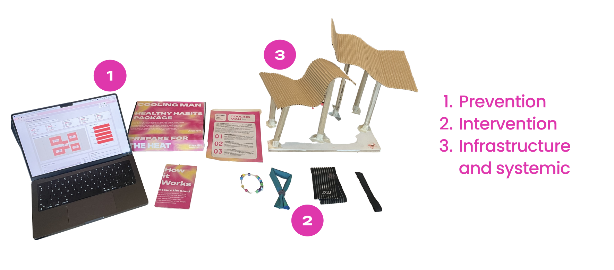
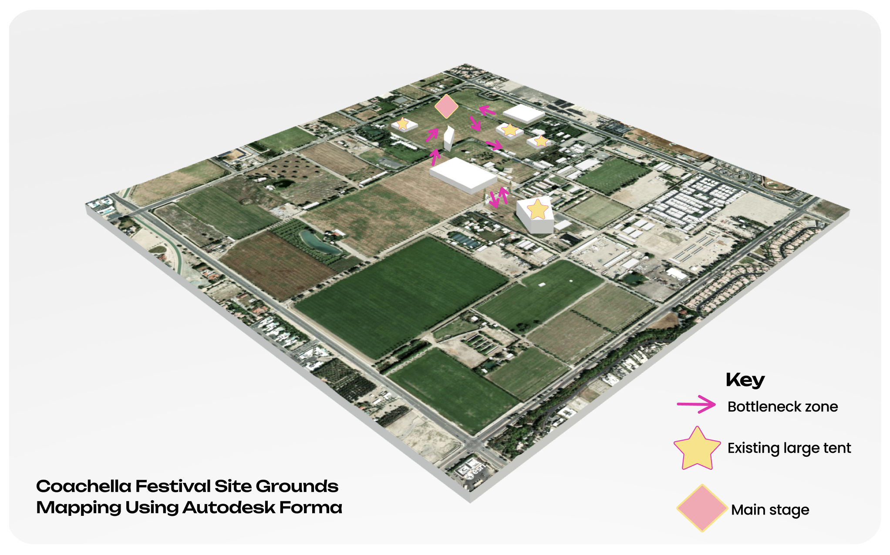
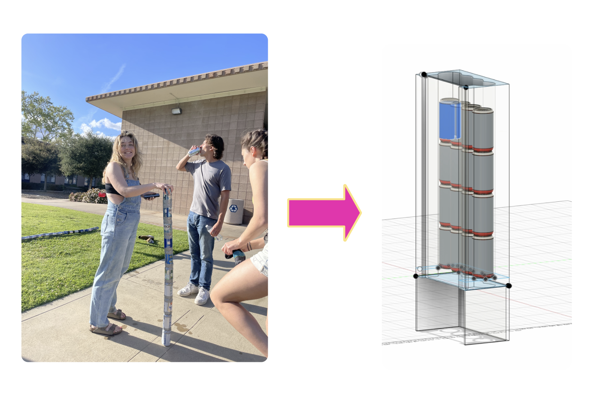
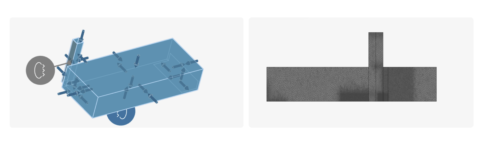

Cooling Man
What is Solo X?
Solo X is a module that challenges first year IDE students to apply what they have learned over the course of the first year to a final indivdual project. For this module, I chose to design a product that would help reduce the risk of heatstroke at music festivals.
The Background
Music has been a part of my life for as long as I can remember. I started playing piano when I was six years old, and I attended my first music festival when I was eighteen.

Music festivals are one of the last places on earth where hundreds of thousands of people can gather around one shared experience. They create moments of collective joy, culture, and community that are increasingly rare in our modern world.
My experience has led me to a larger question: How is the music festival industry adapting to climate change and increasingly difficult crowd conditions?
It is no surprise that humans have caused significant and lasting damage to the climate. Summers continue to become hotter across the world, including here in the UK, where average summer temperatures have steadily increased over time. When you combine extreme heat with alcohol consumption, physical activity, and dense crowds, the result is a growing number of medical emergencies at festivals worldwide, including heat exhaustion and heatstroke.

Yet despite these challenges, the music festival industry remains both economically powerful and culturally important. This means there is both the financial capital and the cultural opportunity to design systems that improve attendee experiences while adapting to a warming climate.
The Process
My research led me to one question: How might I reduce the risk of music festival attendees suffering from heatstroke while preserving the culture and community that music festivals provide?
Through secondary research and user interviews, I identified three initial directions for design.

The first was prevention in the form of an RFID-enabled wristband that could detect crowd movement and ambient temperature. The second was a wearable cooling techniques that utilize pressure points to cool the body quickly. And the third was to modify existing festival spaces with passive cooling systems.
Each direction had potential, so I developed a set of evaluation criteria to determine which path to pursue. One key insight from this conversation was that any successful intervention at a festival needs to be passive. Festival-goers are unlikely to stop enjoying a performance because a device tells them to move, and many people do not actively seek cooling until they already feel unwell. This fundamentally shifted my project direction.
When I analyzed a festival like Coachella at a systems level, I identified bottlenecks around tented spaces, particularly as attendees moved between stages. These areas often become crowded, poorly ventilated, and significantly hotter than surrounding spaces.

When I incorporated additional design criteria, such as reducing waste, avoiding electricity consumption, and minimizing water usage, I realized that my project had become a systems-thinking problem. Music festivals generate enormous amounts of waste while simultaneously operating inefficiently, and comfort often becomes a premium experience available only to those who can afford it.
How might I introduce a passive cooling system into festival tents that improves airflow while remaining modular and easy to deploy throughout a multi-day festival? The answer was a passive solar chimney. A solar chimney works by heating air within a vertical structure. As warm air rises and exits through the top, cooler air is drawn in from below, creating natural ventilation throughout the surrounding space without electricity.
When considering materials, I remembered a tradition from my undergraduate university. Each year, students would build towers out of empty beer cans, and the tallest tower would win. While admittedly a bit silly, it sparked an idea. Coachella alone produces roughly 1,600 tons of waste annually, much of which includes aluminum cans. Aluminum is highly conductive and widely available on-site, meaning recycled cans could potentially be transformed into components of a solar chimney with relatively minimal processing, perhaps requiring only black matte paint to improve heat absorption. Here, I have a small physical prototype demonstrating what that system could look like.

To validate this concept, I conducted two forms of analysis: airflow simulation and life cycle assessment. The airflow simulation suggested an increase in pressure differentials near the bottom of the chimney, indicating that airflow was indeed being generated. However, the convergence plots showed that only some residual values reached ideal conditions, meaning the simulation results were ultimately inconclusive and require further refinement.
However, the life cycle analysis told a more promising story. By repurposing waste materials already generated at festivals, the system has the potential to reduce material consumption while extending the lifespan of resources that would otherwise be discarded. This discovery opens significant opportunities for future exploration.

The next step would be testing the device at full scale on an actual tent to measure real-world cooling performance. Additionally, further work is needed to determine how modular, transportable, and scalable the system could become across different festival environments.
For now, this project demonstrates that waste itself can become infrastructure. Furthermore, by thinking systemically, we can design experiences that are not only more sustainable, but also safer and more equitable. Because as our climate continues to change, preserving spaces for collective joy may depend on reimagining the systems that support them.
The Numbers
To see a more detailed analysis of the design process, including the final design and its impact, please view the supplementary data below.